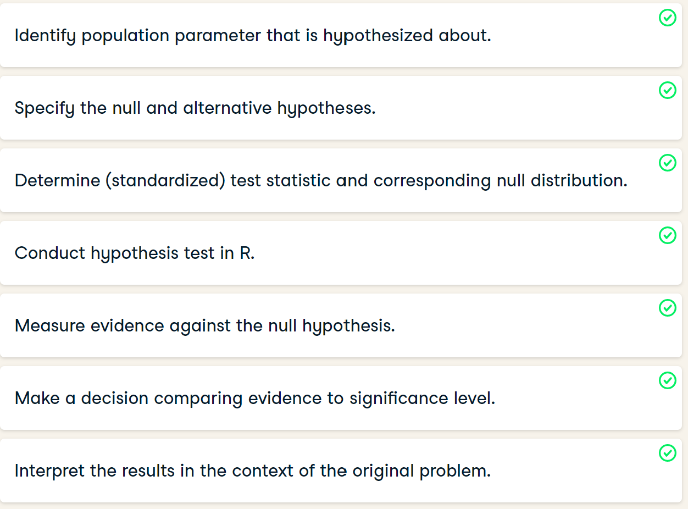

numeric_vector <- c(1, 10, 49)
character_vector <- c("a", "b", "c")
boolean_vector <- c(TRUE, FALSE, TRUE)6 R for Data Analyst
6.1 Introduction to R
6.1.1 Vectors
poker_vector <- c(140, -50, 20, -120, 240)
roulette_vector <- c(-24, -50, 100, -350, 10)
days_vector <- c("Monday", "Tuesday", "Wednesday", "Thursday", "Friday")
#Assign the names of the day to 'roulette_vector' and 'poker_vector'
names(poker_vector) <- days_vector
names(roulette_vector) <- days_vector
total_daily <- poker_vector+roulette_vector
print(total_daily)
total_poker <- sum(poker_vector)
total_roulette <- sum(roulette_vector)
total_week <- total_poker+total_roulette
print(total_week)
# Check if you realized higher total gains in poker than in roulette
answer <- total_poker > total_roulette
answer
#sub-setting vectors by index, by name, by comparison.
poker_wednesday <- poker_vector[3]
poker_midweek <- poker_vector[c(2, 3, 4)]
roulette_selection_vector <- roulette_vector[2:5]
# Selection by name
poker_start <- poker_vector[c("Monday", "Tuesday", "Wednesday")]
average_midweek_gain <- mean( poker_start)
print(average_midweek_gain)
# sub-setting by comparison
selection_vector <- poker_vector>0
print(selection_vector)
# Select from poker_vector these days
poker_winning_days <- poker_vector[selection_vector]
print(poker_winning_days)6.1.2 Matrices
matrix(1:9, byrow = TRUE, nrow = 3)
# Box office Star Wars (in millions!)
new_hope <- c(460.998, 314.4)
empire_strikes <- c(290.475, 247.900)
return_jedi <- c(309.306, 165.8)
# Create box_office
box_office <- c(new_hope, empire_strikes, return_jedi)
# Construct star_wars_matrix
star_wars_matrix <- matrix(box_office, byrow = TRUE, nrow = 3)
print(star_wars_matrix)
# Vectors region and titles, used for naming
region <- c("US", "non-US")
titles <- c("A New Hope", "The Empire Strikes Back", "Return of the Jedi")
# Name the columns with region
colnames(star_wars_matrix) <- region
# Name the rows with titles
rownames(star_wars_matrix) <- titles
# Print out star_wars_matrix
print(star_wars_matrix)
# Construct star_wars_matrix
box_office <- c(460.998, 314.4, 290.475, 247.900, 309.306, 165.8)
region <- c("US", "non-US")
titles <- c("A New Hope",
"The Empire Strikes Back",
"Return of the Jedi")
star_wars_matrix <- matrix(box_office,
nrow = 3, byrow = TRUE,
dimnames = list(titles, region))
# Calculate worldwide box office figures
worldwide_vector <- rowSums(star_wars_matrix)
# Bind the new variable worldwide_vector as a column to star_wars_matrix
all_wars_matrix <- cbind(star_wars_matrix, worldwide_vector)
star_wars_matrix
star_wars_matrix2
# Combine both Star Wars trilogies in one matrix
all_wars_matrix <- rbind(star_wars_matrix, star_wars_matrix2)
# Total revenue for US and non-US
total_revenue_vector <- colSums(all_wars_matrix)
# Print out total_revenue_vector
print(total_revenue_vector)# sub-setting matrix
# use a comma to separate the rows you want to select from the columns
# all_wars_matrix is available in your workspace
all_wars_matrix
# Select the non-US revenue for all movies
non_us_all <- all_wars_matrix[,2]
# Average non-US revenue
mean(non_us_all)
# Select the non-US revenue for first two movies
non_us_some <- all_wars_matrix[1:2,2]
# Average non-US revenue for first two movies
mean(non_us_some)
# Estimate the visitors
visitors <- all_wars_matrix/5
# Print the estimate to the console
visitors6.1.3 Factors
# Sex vector
sex_vector <- c("Male", "Female", "Female", "Male", "Male")
# Convert sex_vector to a factor
factor_sex_vector <-factor(sex_vector)
# Print out factor_sex_vector
factor_sex_vector
# Animals - Nominal categorical variable
animals_vector <- c("Elephant", "Giraffe", "Donkey", "Horse")
factor_animals_vector <- factor(animals_vector)
factor_animals_vector
# Temperature - Ordinal categorical variable
temperature_vector <- c("High", "Low", "High","Low", "Medium")
factor_temperature_vector <- factor(temperature_vector, order = TRUE, levels = c("Low", "Medium", "High"))
factor_temperature_vector
# FACTOR LEVELS
# Code to build factor_survey_vector
survey_vector <- c("M", "F", "F", "M", "M")
factor_survey_vector <- factor(survey_vector)
# Specify the levels of factor_survey_vector
levels(factor_survey_vector) <-c("Female", "Male")
factor_survey_vector
#Summarizing a factor
# Generate summary for factor_survey_vector
summary(factor_survey_vector)
# Note: R returns NA when you try to compare values in a factor,
# Create speed_vector
speed_vector <- c("medium", "slow", "slow", "medium", "fast")
# Convert speed_vector to ordered factor vector
factor_speed_vector <-factor(speed_vector, ordered = TRUE, levels = c("slow", "medium", "fast"))
# Print factor_speed_vector
factor_speed_vector
summary(factor_speed_vector)
# Create factor_speed_vector
speed_vector <- c("medium", "slow", "slow", "medium", "fast")
factor_speed_vector <- factor(speed_vector, ordered = TRUE, levels = c("slow", "medium", "fast"))
# Factor value for second data analyst
da2 <- factor_speed_vector[2]
# Factor value for fifth data analyst
da5 <- factor_speed_vector[5]
# Is data analyst 2 faster than data analyst 5?
da2>da56.1.4 Data Frame
head(mtcars)
str(mtcars)
# Definition of vectors
name <- c("Mercury", "Venus", "Earth",
"Mars", "Jupiter", "Saturn",
"Uranus", "Neptune")
type <- c("Terrestrial planet",
"Terrestrial planet",
"Terrestrial planet",
"Terrestrial planet", "Gas giant",
"Gas giant", "Gas giant", "Gas giant")
diameter <- c(0.382, 0.949, 1, 0.532,
11.209, 9.449, 4.007, 3.883)
rotation <- c(58.64, -243.02, 1, 1.03,
0.41, 0.43, -0.72, 0.67)
rings <- c(FALSE, FALSE, FALSE, FALSE, TRUE, TRUE, TRUE, TRUE)
# Create a data frame from the vectors
planets_df <-data.frame(name, type, diameter, rotation, rings)
planets_df
# Print out diameter of Mercury (row 1, column 3)
planets_df[1,3]
# Print out data for Mars (entire fourth row)
planets_df[4,]
# Select first 5 values of diameter column
planets_df[1:5, 3]
# Select an entire column
planets_df[,3]
planets_df[,"diameter"]
planets_df$diameter
# Select planets with diameter < 1
subset(planets_df, subset = diameter<1)
# Use order() to create positions
positions <- order(planets_df$diameter)
# Use positions to sort planets_df
planets_df[positions, ]
pwd6.2 Introduction to sampling
6.2.1 Point estimates
6.2.2 Random number generation
View(dataset)
# Generate random numbers from ...
randoms <- data.frame(
# a uniform distribution from -3 to 3
uniform = runif(n_numbers, min = -3, max = 3),
# a normal distribution with mean 5 and sd 2
normal = rnorm(n_numbers, mean = 5, sd = 2)
)Notice how the histograms almost take the flat and bell curve shapes of the uniform and normal distributions, but there is a bit of random noise.
Setting the seed to a particular value means that subsequent random code that generates random numbers will have the same answer each time you run it.
6.2.3 Bootstrapping
The bootstrapping workflow is to generate
a resample of the same size as the population,
calculate a summary statistic,
then repeat this to get a distribution of summary statistics.
The key to deciding whether to sample without or with replacement is whether or not your dataset is best thought of as being the whole population or not.
To make a sampling distribution, you start with the population and sample without replacement. To make a bootstrap distribution, you start with a sample and sample that with replacement. After that, the steps are the same: calculate the summary statistic that you are interested in on that sample/resample, then replicate the process many times. In each case, you can visualize the distribution with a histogram.
From the smaller sample of Spotify songs, we can estimate the mean danceability statistic in the population. Since we have a distribution of statistics, we can even quantify how accurate our estimate is.
If the sample is not closely representative of the population, then the mean of the bootstrap distribution will not be representative of the population mean. This is less of a problem for standard errors.
# Generate a sampling distribution
mean_sampling_dist <- replicate(
# Use 2000 replicates
n = 2000,
expr = {
# Start with the population
spotify_population %>%
# Sample 500 rows without replacement
slice_sample(n = 500) %>%
# Calculate the mean popularity as mean_popularity
summarise(mean_popularity = mean(popularity)) %>%
# Pull out the mean popularity
pull(mean_popularity)
}
)
# See the result
mean_popularity_2000_samp
# Generate a bootstrap distribution
mean_bootstrap_dist <- replicate(
# Use 2000 replicates
n = 2000,
expr = {
# Start with the sample
spotify_sample %>%
# Sample same number of rows with replacement
slice_sample(prop = 1, replace = TRUE) %>%
# Calculate the mean popularity
summarise(mean_popularity = mean(popularity)) %>%
# Pull out the mean popularity
pull(mean_popularity)
}
)
# Store the resamples in a tibble
bootstrap_distn <- tibble(
resample_mean = mean_danceability_1000
)
# Draw a histogram of the resample means with binwidth 0.002
ggplot(bootstrap_distn, aes(resample_mean))+
geom_histogram(binwidth=0.002)The sampling distribution mean is the best estimate of the true population mean; the bootstrap distribution mean is closest to the original sample mean.
The sampling distribution mean can be used to estimate the population mean, but that is not the case with the boostrap distribution.
# Calculate std from sampling_distribution
samp_distn_sd <- sampling_distribution %>%
summarize(sd(sample_mean) * sqrt(500))
# Calculate std from bootstrap_distribution
boot_distn_sd <- bootstrap_distribution %>%
summarize(sd(resample_mean) * sqrt(500))
# See the results
c(sam_distn = samp_distn_sd, boot_distn = boot_distn_sd)When you don’t have all the values from the true population, you can use bootstrapping to get a good estimate of the population standard deviation
6.2.4 Confidence interval
When reporting results, it is common to provide a confidence interval alongside an estimate.
What does that confidence interval provide?
- A range of plausible values for an unknown quantity.
Confidence intervals account for uncertainty in our estimate of a population parameter by providing a range of possible values. We are confident that the true value lies somewhere in the interval specified by that range.
The standard error method for calculating the confidence interval assumes that the bootstrap distribution is normal. This assumption should hold if the sample size and number of replicates are sufficiently large.
# Generate a 95% confidence interval using the quantile method
conf_int_quantile <- bootstrap_distribution %>%
summarize(
lower = quantile(resample_mean, 0.025),
upper = quantile(resample_mean, 0.975)
)
# See the result
conf_int_quantile
# Generate a 95% confidence interval using the std error method
conf_int_std_error <- bootstrap_distribution %>%
summarize(
point_estimate = mean(resample_mean),
standard_error = sd(resample_mean),
lower = qnorm(0.025, point_estimate, standard_error),
upper = qnorm(0.975, point_estimate, standard_error)
)
# See the result
conf_int_std_errorthe standard deviation of a bootstrap distribution statistic is a good approximation for the standard error of the sampling distribution.
you calculated confidence intervals for statistics using both the quantile method and the standard error method, and they gave very similar answers. That means that the normal distribution is a good approximation for the bootstrap distribution.
6.2.5 t test
Hypothesis testing workflow for the one sample case where you compared a sample mean to a hypothesized value, and the two sample case where you compared two sample means. In both cases, the workflow follows this format.

6.2.6 Two sample mean test statistic
The hypothesis test for determining if there is a difference between the means of two populations uses t-scores, and can be calculated from three values from each sample using this equation.
Why is t needed?
The process for calculating p-values is
1. to start with the sample statistic,
2. standardize it to get a test statistic,
3. then transform it via a cumulative distribution function (CDF).
In Chapter 1, that final transformation was denoted z, and the CDF transformation used the (standard normal) z-distribution.
In the last video, the test statistic was denoted t, and the transformation used the t-distribution.
Using a sample standard deviation to estimate the standard error is computationally easier than using bootstrapping. However, to correct for the approximation, you need to use a t-distribution when transforming the test statistic to get the p-value.
# Calculate the numerator of the test statistic
numerator <- xbar_no - xbar_yes
# Calculate the denominator of the test statistic
denominator <- sqrt(s_no^2/n_no + s_yes^2/n_yes)
# Calculate the test statistic
t_stat <- numerator/denominator
# See the result
t_stat
# Calculate the degrees of freedom
degrees_of_freedom <- n_no+n_yes-2
# Calculate the p-value from the test stat
p_value <- pt(t_stat, df = degrees_of_freedom, lower.tail = TRUE)
# See the result
p_value6.3 Hypothesis testing in R
6.3.1 Calculating a z-score
Since variables have arbitrary ranges and units, we need to standardize them. For example, it would be silly if a hypothesis test gave a different answer if your variables were in Euros instead of US dollars. Standardization avoids that.
One standardized value of interest in a hypothesis test is called a z-score. To calculate it, we need three numbers:
- Sample statistic (point estimate),
- Hypothesized statistic,
- Standard error of the statistic (which we estimate from the bootstrap distribution).
# View the late_shipments dataset
View(late_shipments)
# Calculate the proportion of late shipments
late_prop_samp <- late_shipments %>%
summarize(prop_late_shipments = mean(late == "Yes")) %>%
pull(prop_late_shipments)
# See the results
late_prop_samp
# Hypothesize that the proportion is 6%
late_prop_hyp <- 0.06
# Calculate the standard error
std_error <- late_shipments_boot_distn %>%
summarize(sd_late_prop = sd(late_prop)) %>%
pull(sd_late_prop)
# Find z-score of late_prop_samp
z_score <- (late_prop_samp - late_prop_hyp) / std_error
# See the results
z_scoreThe z-score is a standardized measure of the difference between the sample statistic and the hypothesized statistic.
6.3.2 p value
A hypothesis is a statement about a population parameter. We don’t know the true value of this population parameter; we can only make inferences about it from the data. Hypothesis tests compare two competing hypotheses.
Rather than saying we accept the alternative hypothesis, the verdicts are rejecting the null hypothesis, or failing to reject the null hypothesis.
The hypothes is testing equivalent of “beyond a reasonable doubt” is known as the significance level.
The tails of the distribution that are relevant depend on whether the alternative hypothesis refers to “greater than”, “less than”, or “differences between”.
# Calculate the p-value
p_value <- pnorm(z_score, lower.tail = FALSE)
# See the result
p_value The p-value is calculated by transforming the z-score with the standard normal cumulative distribution function (CDF).
6.3.3 Statistical significance
What defines the cutoff point between a small p-value and a large one?
Significance level
The cutoff point is known as the significance level,\(\alpha\). The appropriate significance level depends on the dataset and the discipline you are working in. Five percent is the most common choice, but ten percent and one percent are also popular. The significance level gives us a decision process for which hypothesis to support.
If the p-value is low, H0 must go (reject H0 )
If the p-value is high, H0 must fly (fail to reject H0)
It’s important that you decide what the appropriate significance level should be before you run your test. Otherwise there is a temptation to decide on a significance level that lets you choose the hypothesis you want.
6.3.4 Confidence intervals
To get a sense as to potential values of the population parameter, it’s common to choose a confidence interval of one minus the significance level. For a significance level of 0.05 e, we’d use a 95% confidance interval. Here’s the calculation using the quantile method.
# Calculate 95% confidence interval using quantile method
conf_int_quantile <- late_shipments_boot_distn %>%
summarize(
lower = quantile(prop_late_shipments, 0.025),
upper = quantile(prop_late_shipments, 0.975)
)
# See the result
conf_int_quantileThe interval runs from 0.369 to 0.407 giving a range of plausible values for the proportion of data scientists starting programming as children.
Calculating confidence intervals
If you give a single estimate of a sample statistic, you are bound to be wrong by some amount. For example, the hypothesized proportion of late shipments was 6%. Even if evidence suggests the null hypothesis that the proportion of late shipments is equal to this, for any new sample of shipments, the proportion is likely to be a little different. Consequently, it’s a good idea to state a confidence interval. That is, you say “we are 95% ‘confident’ the proportion of late shipments is between A and B” (for some value of A and B).
Sampling in R demonstrated two methods for calculating confidence intervals. Here, you’ll use quantiles of the bootstrap distribution to calculate the confidence interval.
When you have a confidence interval width equal to one minus the significance level, if the hypothesized population parameter is within the confidence interval, you should fail to reject the null hypothesis.